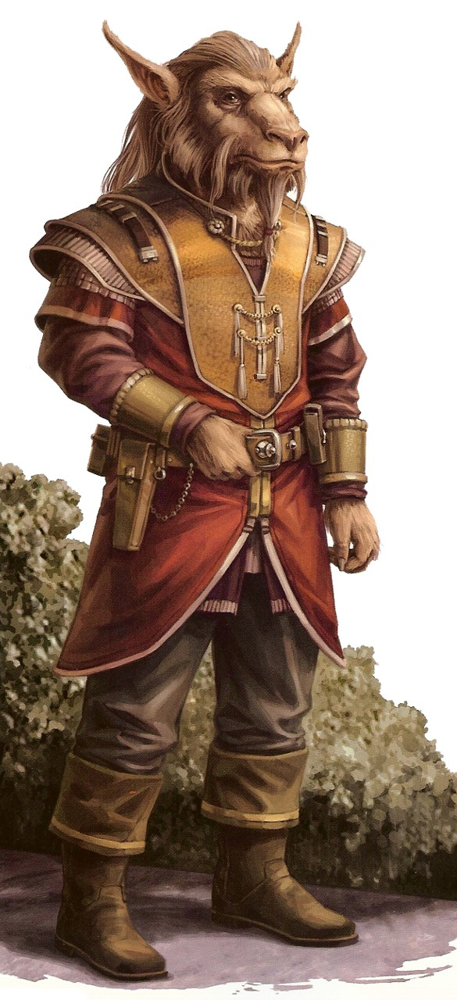

Bothan
bothan
Special Abilities: Bothans begin the game with one rank in Streetwise. They still may not train Streetwise above rank 2 during character creation. They also start with one rank in the Convincing Demeanor talent .
Bothans are the galaxy's information brokers. Adept at picking up on secrets or seeing things other species ignore, Bothans can be valuable assets in any endeavor—or untrustworthy partners.
Bothans have highly attuned senses which aid in gathering and relaying information. The noses at the end of their tapered snouts can distinguish many smells, and their eyes have an extended range of focus. They possess ears double the size of most species and can rotate and bend them to pick up directional sounds. Standing on average 1.6 meters, their small size allows Bothans to often go unnoticed and slip through cracks that would never fit a human. Their greatest asset is their fur. They can communicate with other Bothans by rippling their fur, demonstrating changes in mood and conveying more specific intimations in a code.
Every layer of Bothan society is based on the acquisition, manipulation, and utilization of knowledge. Sometimes likened to the Hutts and Twi'leks, Bothans take such comparisons as an insult. Prestige, not wealth, motivates them. A Bothan's reputation is, at the end of the day, all he has. The Bothan Council governs the Bothan worlds. The major clans all have one representative in the Council, which then elects the Council Chief. Bothans shun outright confrontation. Information is their weapon, and Bothans play secrets like a Corellian plays sabacc: the truth is the ace up their sleeve.
The Bothans operate the most elaborate and extensive intelligence network across the galaxy. This "spynet" works through moles, provocateurs, sleepers, and drop-offs which transfer information down a clandestine web to the Bothan spymasters. Though the spynet hubs on Bothawui are Bothan-run, the majority of its "placed" agents are foreign species.
Bothans hail from Bothawui, a temperate world in the Mid Rim. They have also established major colonies on Kothlis and Torolis.
Bothese is the native tongue of the Bothans and Botha is its written form. Almost all Bothans are fully fluent in Basic. Wrendui, which in Bothese means the nonverbal cues and emotions a Bothan can communicate through his fur, has many coded forms that a spectator can translate into explicit information if the cipher is known. Well-trained Bothan spies can switch between different forms of wrendui in a single ripple of their fur.
Bothans gravitate towards professions in which information is king. They make strong Traders, Scouts, Thieves, and Politicos. They will attempt to ascend the chain of command of their current career and will also funnel knowledge to the Bothan Spy Network to help their clan back on Bothawui